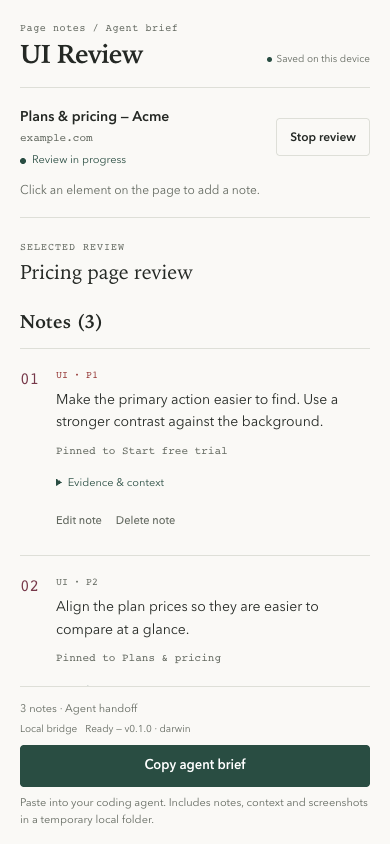
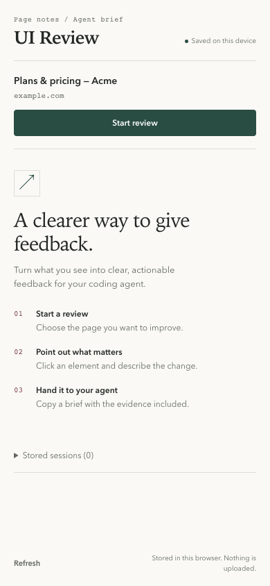
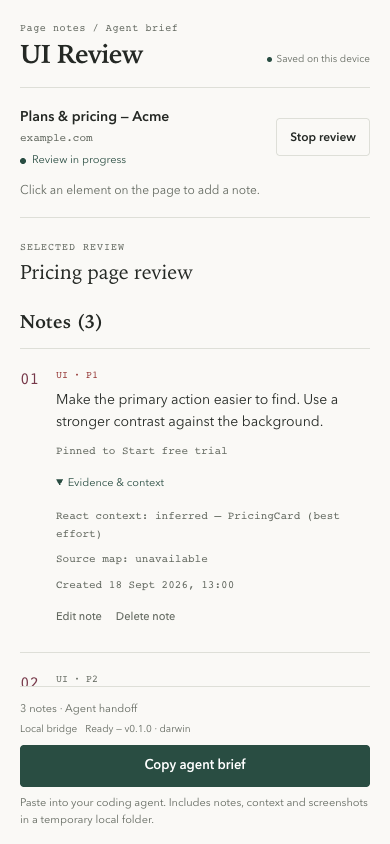

Local-first Chrome extension
See the flaw.
Give the fix.
UI Review turns a real page into a precise brief your coding agent can act on — with pins, screenshots and the context behind every note.
ACME / PLANS
A little more room
to create.
Start free trial

Made for the moment before a build
Stop translating your eyes into vague tickets. Point to the thing. Keep the proof. Hand over the work.
- 01 Review material stays on your machine
- 02 Every note keeps its evidence
- 03 One brief, ready for an agent
The review flow
Three gestures.
One useful handoff.
-
01
Start where you are
Open the side panel on any HTTP(S) page. The review starts only when you say so.

-
02
Point at what matters
Hover, click, describe the change. UI Review pins the element and captures visual context.
-
03
Hand it to your agent
Copy one clear brief with the notes, DOM context and local screenshot paths already attached.
review.mdLOCAL ONLY# Pricing page review
01 · UI · P1
Make the primary action easier to find.Evidence
Viewport · Element crop · React context_
Context without the creep
Evidence you can
actually trust.
Screenshots are visible before export. Framework and source-map signals say whether they are detected, inferred or unavailable. There is no pretend certainty.

Field note Evidence stays tucked away until you need it.
Early access / local setup
Bring a better
brief to the build.
UI Review is a local-first Chrome extension. Build it, load it, and keep your review material on your machine.
npm install
npm run buildThen open chrome://extensions → Developer mode → Load unpacked → dist/. To copy agent briefs, install the local Native Messaging bridge too — bridge setup.
Reviews, screenshots and handoffs stay local. Optional framework source-map lookup only requests public assets and discards fetched source.
Get UI Review ↗